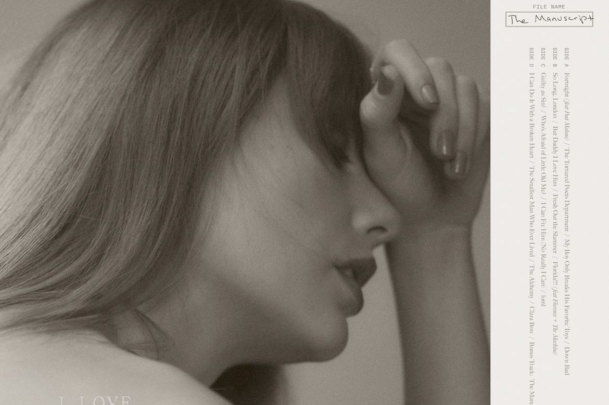

The Tortured Poets Society Album
"The Tortured Poets Society" is a collaborative project featuring Taylor Swift and various artists from different genres.
The album explores themes of pain, vulnerability, and artistic expression through emotionally charged lyrics and melodies.
Tracklist
- 01 Fortnight [ft. Post Malone]
- 02 The Tortured Poets Department
- 03 My Boy Only Breaks His Favorite Toys
- 04 Down Bad
- 05 So Long, London
- 06 But Daddy I Love Him
- 07 Fresh Out the Slammer
- 08 Florida!!! [ft. Florence and the Machine]
- 09 Guilty as Sin?
- 10 Who’s Afraid of Little Old Me?
- 11 I Can Fix Him (No Really I Can)
- 12 LOML
- 13 I Can Do It With a Broken Heart
- 14 The Smallest Man Who Ever Lived
- 15 The Alchemy
- 16 Clara Bow
- 17 The Manuscript (Bonus Track)
Highlighted Songs
- broken heart: A raw and poignant ballad reflecting on heartbreak and loss.
- tears on the page: An introspective track exploring the struggles of the creative process.